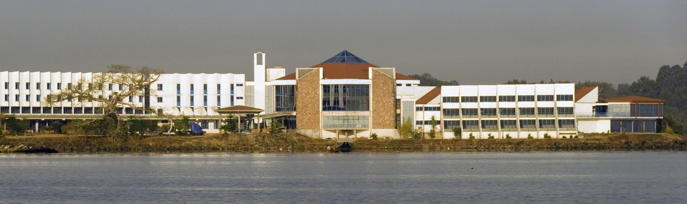
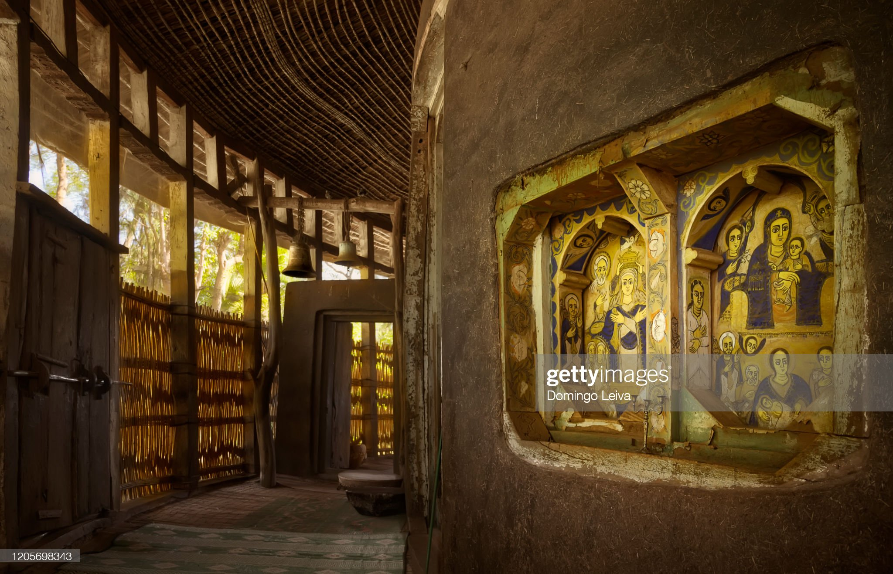
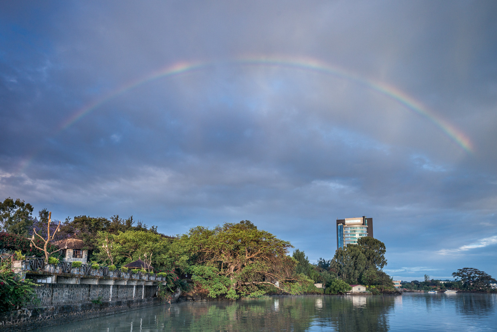

Skip the standard tourist routes and experience bahir dar like a local by visiting the following places.

blue nile falls
The most dramatic falls anywhere on the Nile river system

lake tana
The largest lake in Ethiopia and the source of the Blue Nile

azwa monastery
A 950 year old church dedicated for the memorial of saint Merry
Bahir Dar (Amharic:'sea shore') is the capital city of Amhara Region, Ethiopia. Bahir Dar is one of the leading tourist destinations in Ethiopia, with a variety of attractions in the nearby Lake Tana and Blue Nile river. The city is known for its wide avenues lined with palm trees and a variety of colorful flowers. In 2002, it was awarded the UNESCO Cities for Peace Prize for addressing the challenges of rapid urbanization.

Bahir Dar is located at the exit of the Abbay from Lake Tana at an altitude of 1,820 metres (5,970 ft) above sea level. The city is located approximately 578 km north-northwest of Addis Ababa. The Lake Tana region is a UNESCO Biosphere Reserve since 2015.
Your guide
"I’ve lived in Bahir dar for more than 19 years,so I can show you all of it’s best parts and hidden secrets of this beautiful city.”
Robel fikru
You want to see places out of the boring tourist brochures, feel domestic life and pure emotion of living? To meet new people, have fun, learn something new and original? Well, we are waiting just for you . Contact us HERE and start your journey.